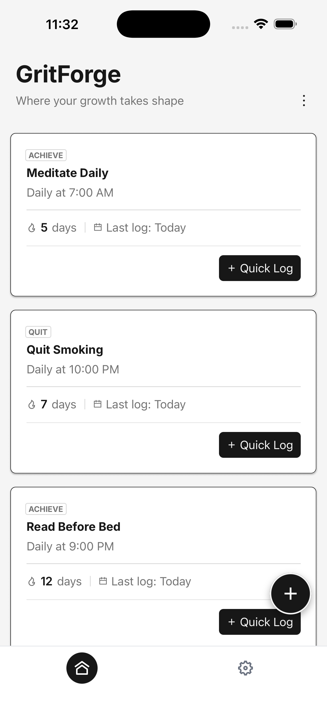
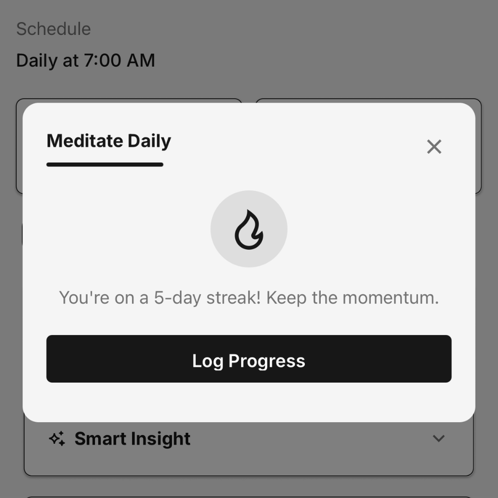
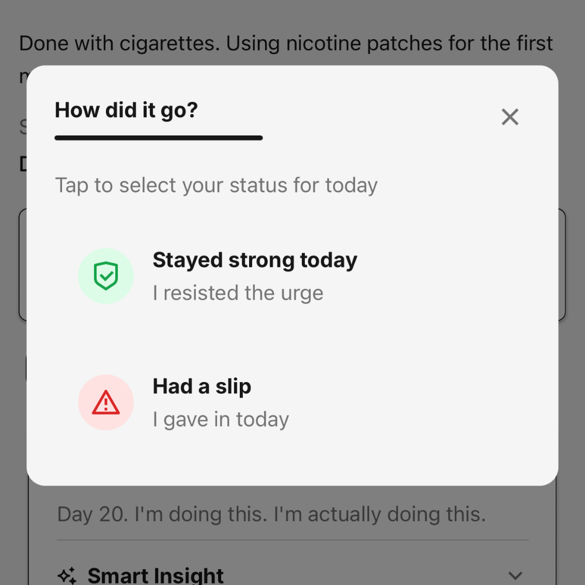
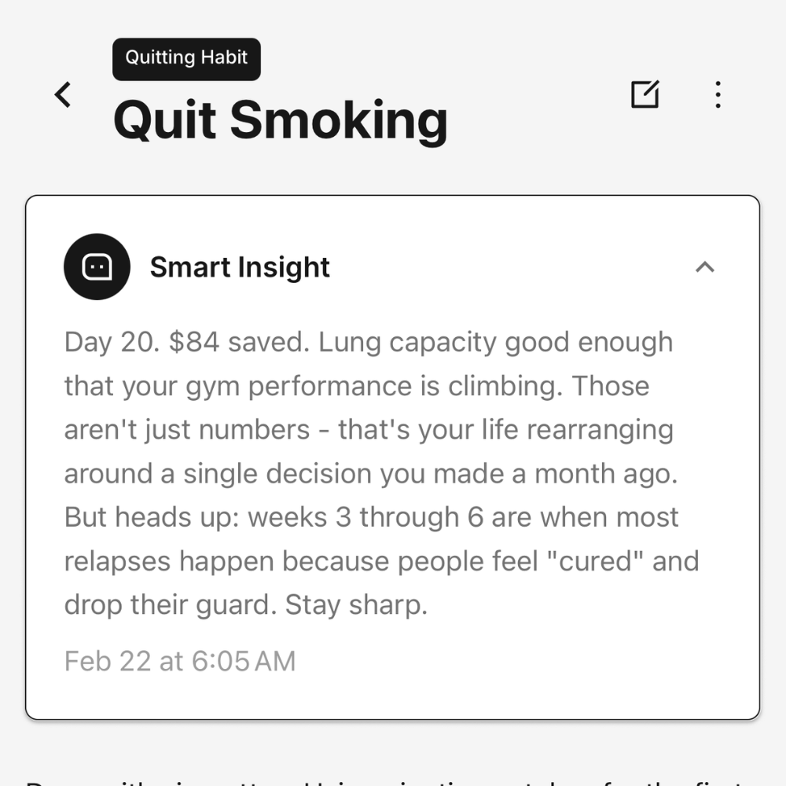
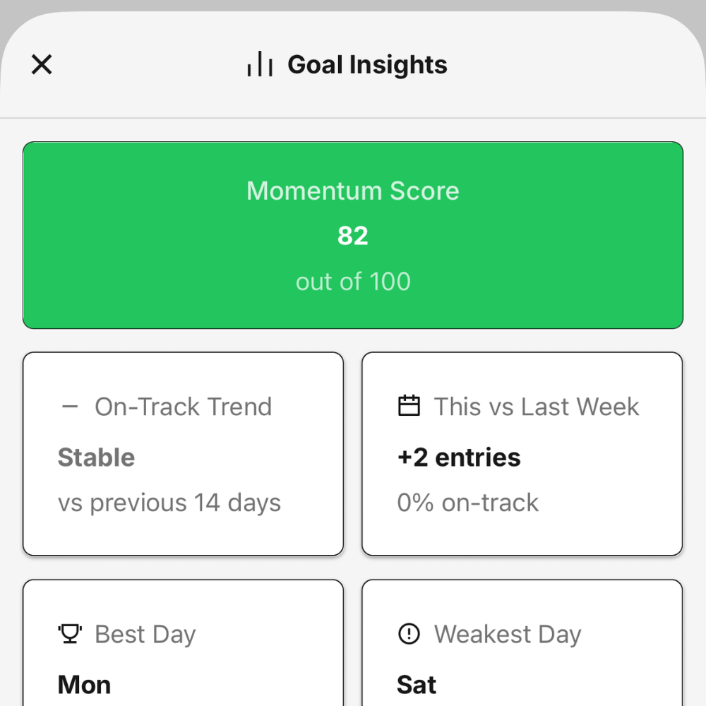
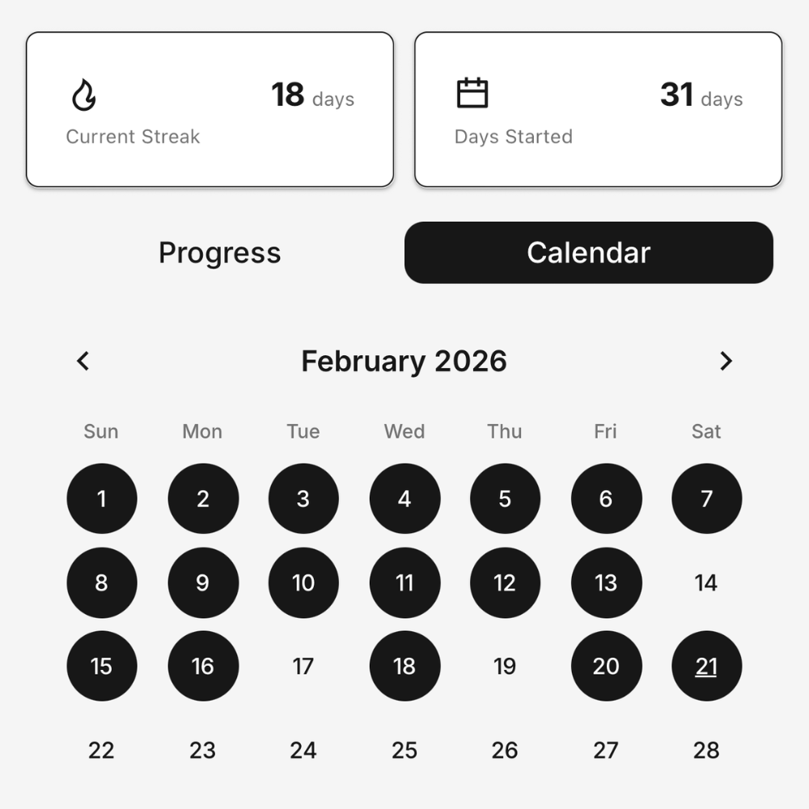
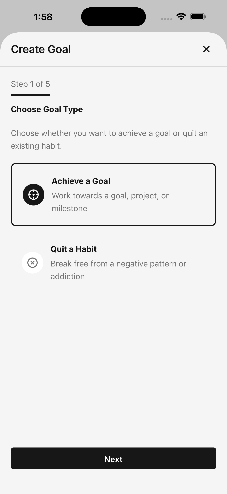
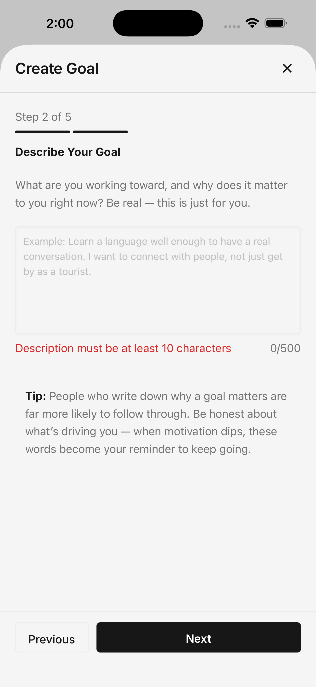
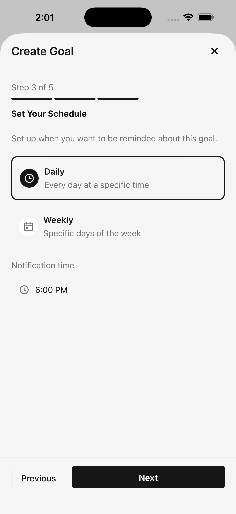
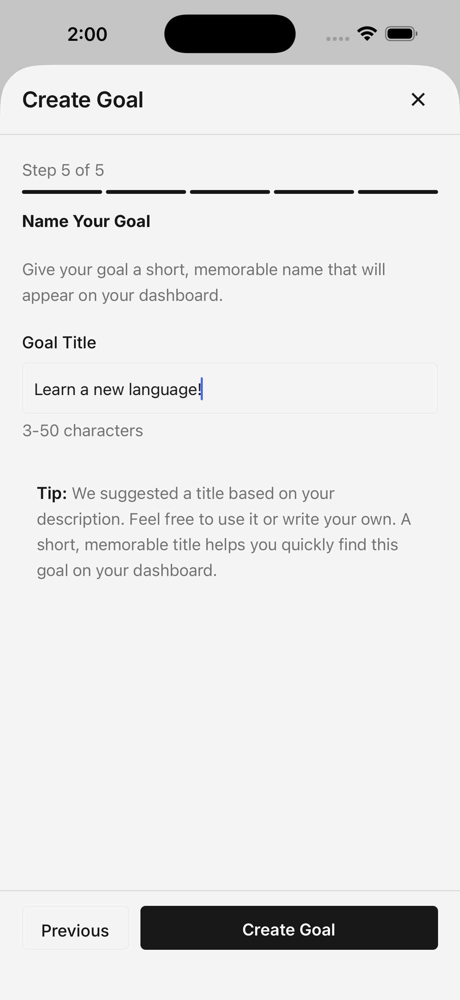

Ready to Achieve Your Goals?
Start tracking, reflecting, and growing - all in one app.

Available on iOS and Android
GritForge combines goal tracking with daily journaling and smart coaching - so you don't just log what you did, you understand why it matters and what to do next.
Available on iOS and Android

Most habit apps give you a checkbox and call it a day. You tap "done," get a streak number, and move on - never really thinking about what you're building or why.
GritForge is different.
We combine the accountability of goal tracking with the self-awareness of journaling. Each day, you don't just mark progress - you reflect on how it went, capture your thoughts, and receive personalized feedback that actually responds to your journey.
Whether you're working toward a big goal or quitting a bad habit, GritForge helps you stay accountable and stay mindful.
Powerful features designed to help you achieve your goals and break bad habits - with smart coaching that adapts to your journey.
GritForge handles every direction of change - with coaching tailored to each. Building a daily exercise habit requires different advice than finishing a novel. Finishing a novel requires different support than quitting smoking.
Routines you want to do regularly. The goal is consistency - showing up day after day until it becomes automatic.
Exercise 4x/week, meditate daily, read before bed, journal every evening
Smart coaching focuses on: Triggers, environment design, making habits automatic
Big goals you work toward until completion. The goal is progress - sustained effort over time until you cross the finish line.
Write a novel, launch a business, get certified, train for a marathon
Smart coaching focuses on: Breaking it down, maintaining momentum, next concrete step
Habits and behaviors you want to eliminate. The goal is resistance - building strength to say no, one day at a time.
Quit smoking, stop doomscrolling, no stress eating, quit vaping
Smart coaching focuses on: Cravings, triggers, compassionate recovery from slips
Most apps treat all goals the same - checkbox, streak, done. GritForge recognizes that your journey depends on what you're trying to do, and tailors the coaching to match YOUR specific challenge.

Every progress entry is a chance to reflect.
When you log your day, GritForge gives you a smart journal prompt based on your goal - a starting point for capturing what happened and how you felt. You can use it as-is for quick logging, or expand on it when you want to dig deeper.
Over time, your entries become a personal record of your growth - not just what you did, but who you're becoming.
Showing up is important. But how you show up matters too.
GritForge lets you log whether each day was:
This honest tracking gives you a real picture of your journey. Your calendar shows both - so you can see the wins AND acknowledge the tough days.


After you log your progress, GritForge reads what you wrote and responds with personalized feedback - tailored to your specific type of goal.
It knows the difference between building a daily habit and finishing a big project - and coaches you accordingly. Habits get consistency-focused advice. Projects get progress-focused guidance. Quit goals get compassionate resistance support.
On a streak? You'll hear about it. Having a rough patch? You'll get real support - not empty cheerleading. Coming back after time away? You'll be welcomed, not shamed.
It's like having a coach who actually pays attention to your journal - and understands what you're trying to accomplish.
Go beyond a simple streak counter. GritForge gives you a full picture of how you're really doing.
Plus weekly comparisons, on-track trends, and milestone countdowns - everything you need to understand your progress at a glance.

Life gets in the way. You'll miss days. Maybe weeks. Maybe longer. Most apps make you feel like a failure when you return. GritForge welcomes you back - with your history intact and a fresh start waiting. Your journey doesn't reset just because you took a detour.
Set your schedule - daily, weekly, or custom - and GritForge handles the rest. You'll get regular reminders at the times you choose, milestone celebrations when you hit your goals, and gentle nudges when your streak needs protecting. The more you invest, the more we help you stay on track.
Your progress comes to life in a calendar view that shows every day of your journey. See patterns emerge. Notice when you're thriving. Acknowledge when you're struggling. Watch the colors fill in as you build consistency over time. It's not just data - it's a visual story of your growth.

Four simple steps to start achieving your goals.
Achieving something new or quitting an old habit? Choose your direction and describe what you're working toward.
Daily, weekly, or something custom. Tell us when you want to be reminded, and we'll keep you accountable.
Each day, capture what happened with a quick tap or a longer reflection. Smart prompts make it easy to get started.
Watch your progress build. Read feedback that fits your journey. Celebrate the wins. Learn from the struggles.

Goal Type

Description

Schedule

Personalize
See how we compare to other habit trackers.
| Feature | Other Apps | GritForge |
|---|---|---|
| Goal types | One mode only | Daily habits + Projects + Quit goals (3 tailored modes) |
| Coaching approach | Same advice for everything | Tailored: consistency for habits, progress for projects, resistance for quit |
| Daily logging | Tap a checkbox | Reflect with journal prompts |
| Progress tracking | Just streaks | On-track vs. struggled days |
| Feedback | Generic quotes | Responds to YOUR progress |
| After a break | Guilt or silence | Welcome back message |
| Analytics | Basic streak count | Momentum score, trends, best/weakest days, personal bests |
Everything you need to know about GritForge.
Start tracking, reflecting, and growing - all in one app.
Available on iOS and Android